A sports headphone and speaker duo that harmonizes exercise and recovery.
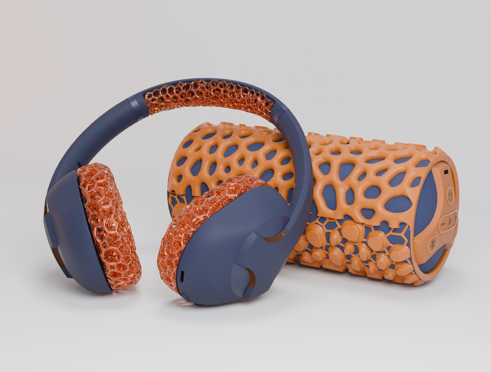
Hôlo pairs a sports headphone with a speaker that doubles as a foam roller — one object for the workout, one for the recovery that follows, sharing a single material and control language.
The move that shaped both bodies was lattice structure: an open, repeating geometry that lets the earcup cushion breathe and pass sweat where a sealed foam pad traps both.
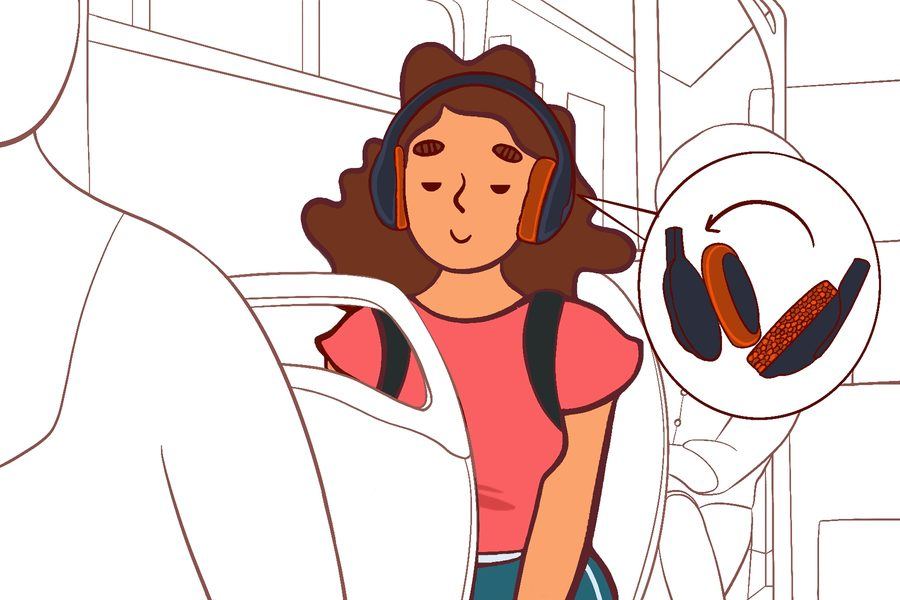
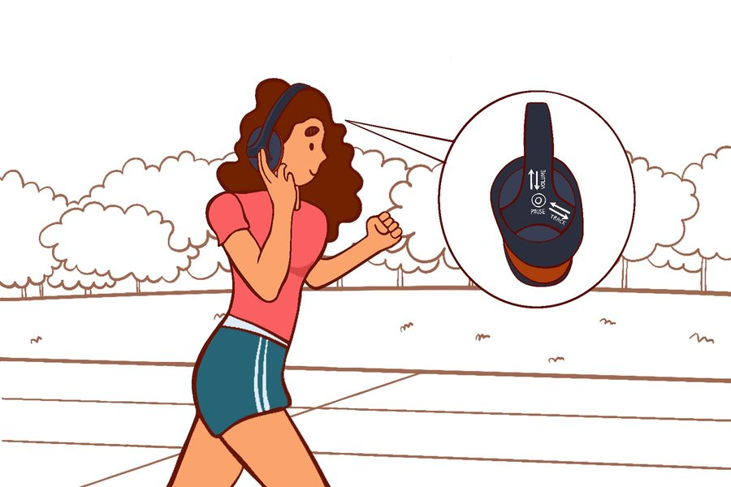
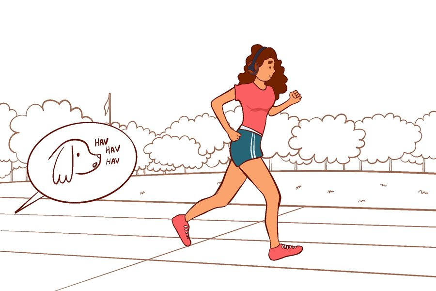
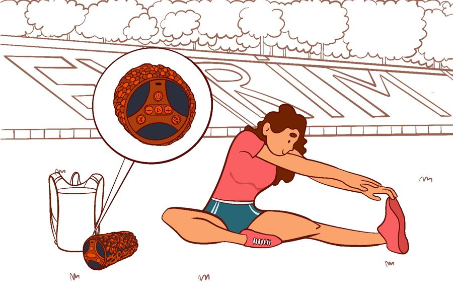
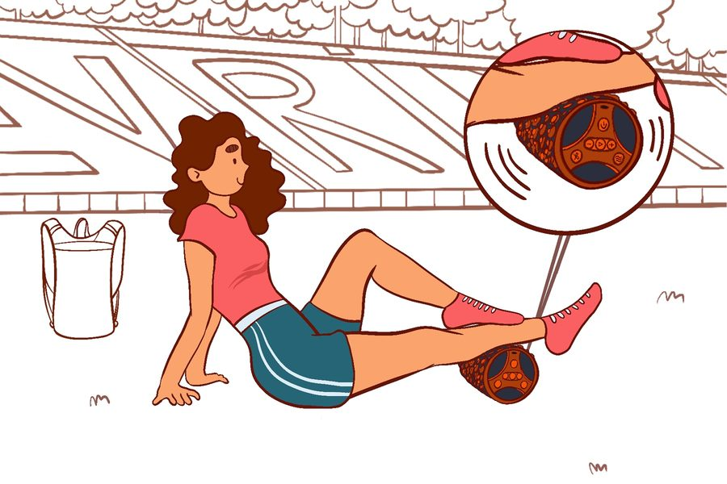
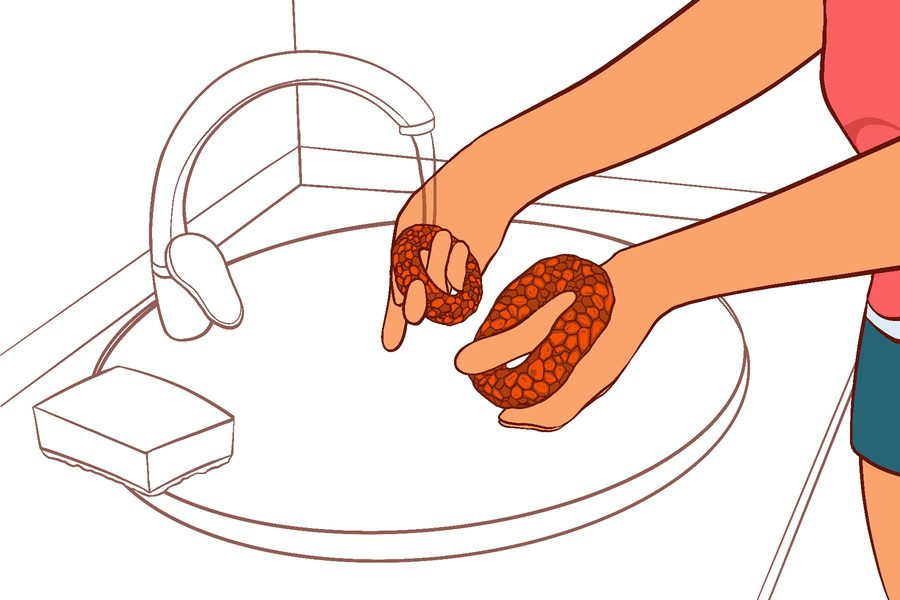
From anthropometric baseline through sketch iteration on both bodies, clay ear proofing, 3D-printed lattice and shell mock-ups, and finally field testing in use.
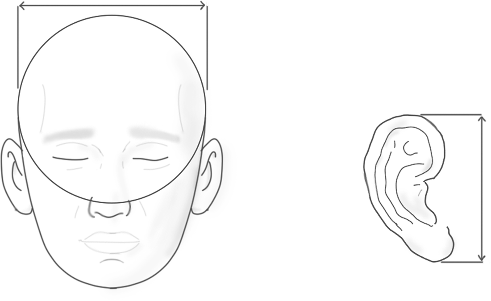
Head and ear dimensions were pulled from DINED before any form work started, so the earcup and headband are sized to cover the 5th-to-95th percentile range rather than a single assumed head.
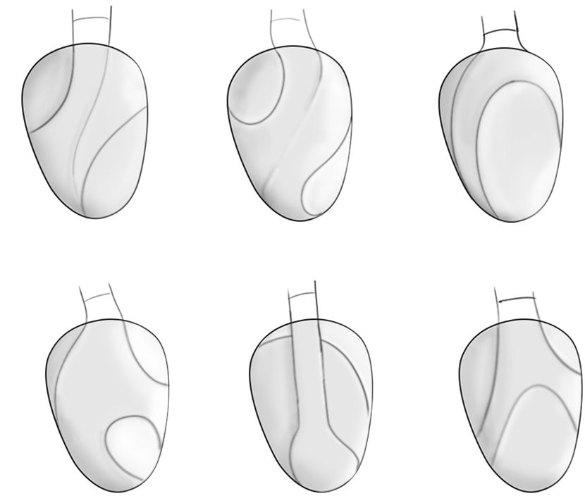
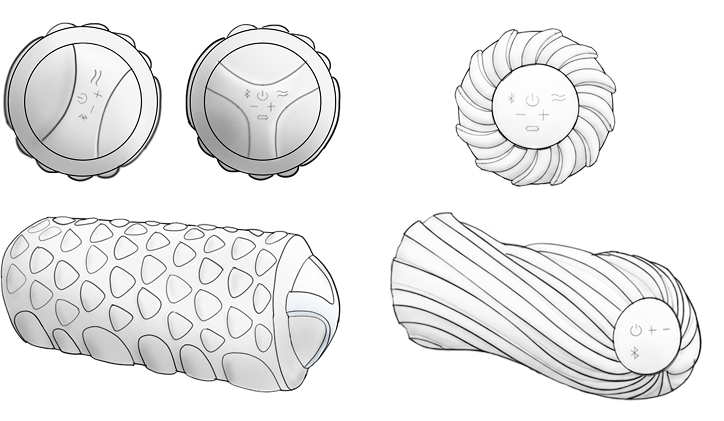
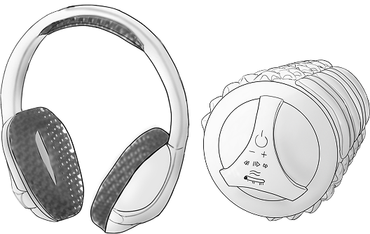
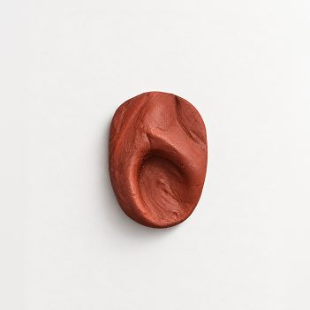
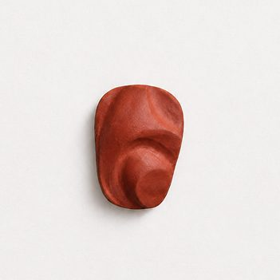
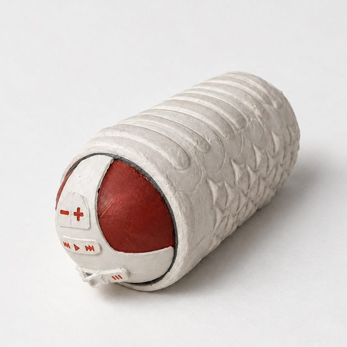
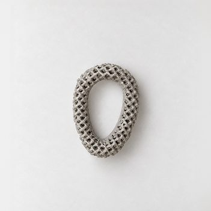
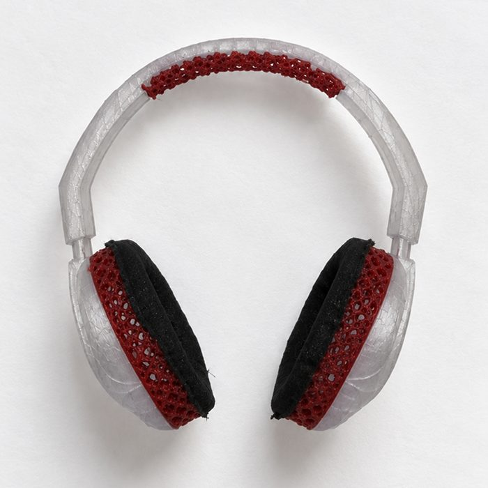
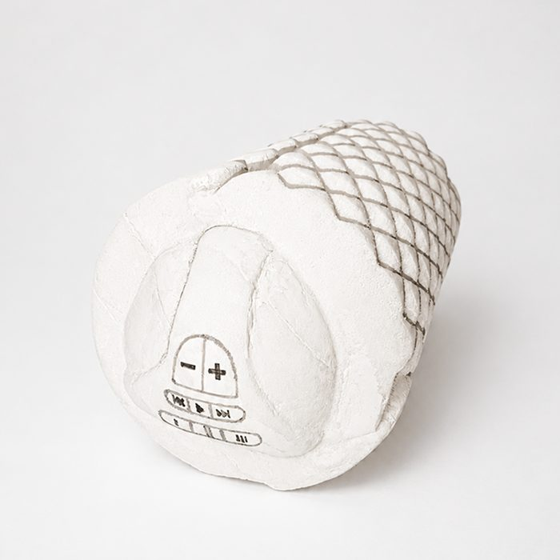
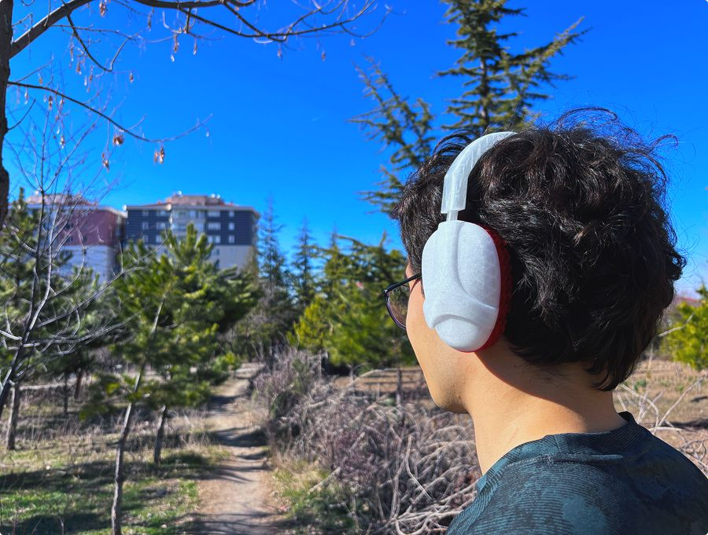
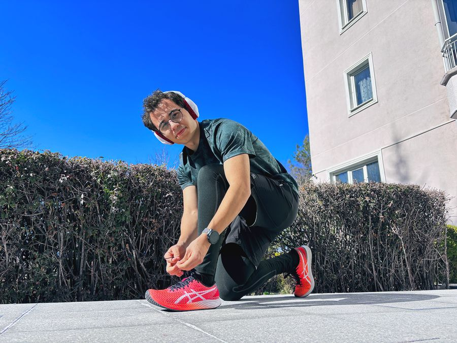
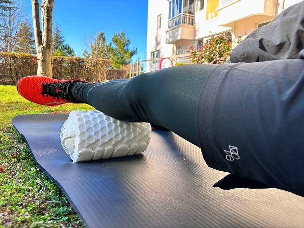